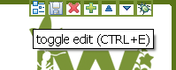
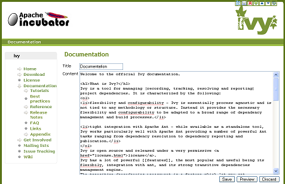

Writing documentation for Ivy is pretty simple. The documentation engine used is called <a href="http://xooki.sourceforge.net">xooki</a>, and allows to edit pages while you browse them as soon as you browse them offline (and thus can actually save your modifications). To browse the doc offline, we recommend to check it out from svn: <code> svn co https://svn.apache.org/repos/asf/ant/ivy/core/trunk/doc ivy-doc </code> Alternatively you can also check out the whole site: <code> svn co https://svn.apache.org/repos/asf/ant/ivy/site ivy-site </code> Then open the index.html file, and you will browse the web site exactly as when you're online, except that you will see a small toolbar at the upper right, allowing to <a href="#edit-inline">edit the page</a>, save it, move the page in the <a href="#edit-toc">TOC</a>, create a child, and so on: <center></center> <br/><br/> <h1><a name="edit-inline"></a>Inline editing</h1> When you choose edit you will see a pretty familiar textbox where you can edit the page source. <center><a href="images/xooki-edit.png"></a></center> <br/><br/> The source uses a format very familiar to those who sometimes write html. Indeed <a href="#issues">nearly</a> any html is allowed. But you also have some shortcuts and neat syntax. First, line breaks are automatically recognized, so you don't have to put br everywhere. Another interesting thing is the code fragment: <code> <code> any text including <tags/> </code> </code> Very helpful to avoid escaping all xml with lt and gt. Finally, URLs are automatically recognized and convert to links, jira issues like IVY-202 are recognized too, and you can use a neat format to reference any ant ivy ant task like [[ant:install]], or also reference svn page easily like [[svn:build.xml this link to build.xml]]. And you can also link to another page by providing its id (i.e. its url without the base and the .html) like the [[index]] or the [[history/latest-milestone/index]]. Feel free to edit this page to get a good overview of what is possible. And do not forget to save your changes before leaving the page! Then you can use your favorite IDE or svn and compute a patch for what you changed, and submit this patch by attaching it to a jira issue, or simply sending it to the ivy-dev [[mailing-lists mailing list]]. <h1><a name="edit-toc"></a>Editing the TOC</h1> The structure of the TOC is stored in the [[svn:doc/toc.json toc.json]]. Some operations are available in the toolbar, others need manual editing of the json file. <h2>Moving entries</h2> To move up or down an entry within its category, you can use the arrows in the toolbar. First go on the page you want to move and then use the arrows ( ). Note that the changes are directly done in the json file, there is no need to trigger some "save" action. <h2>Adding entries</h2> You can also add an entry to the TOC via the toolbar, but only as a child of an existing entry. Select the parent, and use the <img src="xooki/images/addchild.gif" /> button. Then you will be asked for a title (displayed to the end user) and a path (the path of the html file on the filesystem, relative to the root). To add a root entry to the TOC, open the toc.json file with your favorite editor. In the root "children" array, add your entry: <code type="json"> { "id":"mydir/myfilename", "title":"My title", "children": &#x5B; &#x5D; }, </code> And create an HTML file mydir/myfilename.html with: <code type="xml"> <!DOCTYPE HTML PUBLIC "-//W3C//DTD HTML 4.01//EN" "http://www.w3.org/TR/html4/strict.dtd"> <!-- Licensed to the Apache Software Foundation (ASF) under one or more contributor license agreements. See the NOTICE file distributed with this work for additional information regarding copyright ownership. The ASF licenses this file to you under the Apache License, Version 2.0 (the "License"); you may not use this file except in compliance with the License. You may obtain a copy of the License at http://www.apache.org/licenses/LICENSE-2.0 Unless required by applicable law or agreed to in writing, software distributed under the License is distributed on an "AS IS" BASIS, WITHOUT WARRANTIES OR CONDITIONS OF ANY KIND, either express or implied. See the License for the specific language governing permissions and limitations under the License. --> <html> <head> <script type="text/javascript">var xookiConfig = {level: 0};</script> <script type="text/javascript" src="xooki/xooki.js"></script> </head> <body> &lt;textarea id="xooki-source"&gt; &lt;/textarea&gt; <script type="text/javascript">xooki.postProcess();</script> </body> </html> </code> And finally reload the index.html in your favorite browser, the new entry will appear. You can now add some content by <a href="#edit-inline">editing the page</a>. <h2>Abstract Entries</h2> Some entries in the tree of the TOC can be abstract. Such kind of node does not link to any page, but holds some children. So a node will appear in the tree, with an arrow to display or hide the children, but there is no html links associated, as there is no page to display. To specify a such node, edit the toc.json and set the "isAbstract" property to true: <code type="json"> { "id":"myAbstractID", "title":"My Abstract Node", "isAbstract":true, "children": ....... } </code> <h2>External TOC reference</h2> It is possible to not have the entire documentation in one place. This is particularly useful for the [[history versioning of some documentation]]. So the end user will see an unified tree whereas every information is not stored in the toc.json. So you have to define a node with the 3 following properties: <ul> <li>"title": the title of the imported entry</li> <li>"importRoot": the relative path to the root of the external TOC (where to find the other toc.json)</li> <li>"importNode": the ID of node in the external TOC to point to.</li> </ul> For instance: <code type="json"> { "title":"My doc version 1.2.3", "importRoot":"history/1.2.3", "importNode":"index" }, </code> <h1><a name="issues"></a>Known issues</h1> There is a special xml tag used by Xooki to handle the inline edition of the content: textarea with id xooki-source. In the current page we had to include that special tag. So in the source of this page there would be two tags with the same id "xooki-source", which is forbidden. So we have to xml encode it in the source, with some &amp;lt; and &amp;gt;. There also an issue with some json code. Above there are some json code which has to be xml encoded unless Xooki got confused. So &#x5B; and &#x5D; have to be encoded into respectively &amp;#x5B; and &amp;#x5D;. And there are some xml encoding issues while inline editing. Generally you don't need to xml encode them, Xooki will handle it for you. But as discussed above, sometimes you are forced to use some. So as you may see the source of this page, xml entities are encoded 3 times. If you want to display an xml encoded &amp; then you will have to write &amp;amp;amp;amp;. <b>IMPORTANT NOTE</b>: if you edit a page with Xooki which has some xml entities, Xooki will eat them and the triple encoding will disappear. Before saving you have to be sure to re-encode the &amp; of the entities two times: in the page you will see &amp;#x5D; which has to be replaced by &amp;amp;amp;#x5D;. The simpler though is to edit this kind of file via a text editor and not a browser.